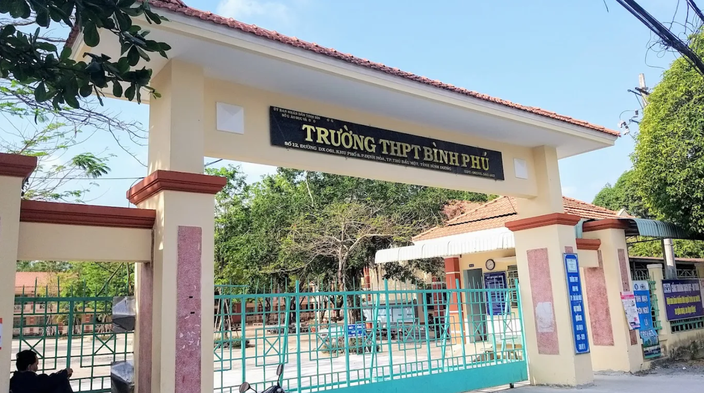

Trường THPT Bình Phú là một trong những ngôi trường có bề dày lịch sử tại Bình Dương,
được thành lập từ tháng 6 năm 1973. Tọa lạc tại xã Tân Định, thành phố Thủ Dầu Một,
trường được xây dựng bằng sự đóng góp tâm huyết của nhân dân địa phương nhằm đáp ứng
nhu cầu học tập của con em trong vùng.
Qua hơn 50 năm xây dựng và phát triển, trường THPT Bình Phú đã vượt qua nhiều khó khăn
và thách thức, luôn giữ vững truyền thống "Nhà trường và nhân dân cùng làm". Với đội ngũ
giáo viên tận tâm, cơ sở vật chất hiện đại, trường đã đào tạo nhiều thế hệ học sinh
xuất sắc, đạt nhiều thành tích cao trong các kỳ thi học sinh giỏi và thi tốt nghiệp THPT.
Tầm nhìn: Trở thành trường THPT có chất lượng giáo dục cao, đáp ứng
nhu cầu phát triển hội nhập của xã hội.
Sứ mệnh: Xây dựng môi trường học tập hiện đại, thân thiện, có nề nếp,
kỷ cương, nhân ái, giúp mỗi học sinh phát triển tối đa năng lực, sống có lý tưởng,
trau dồi nhân cách.